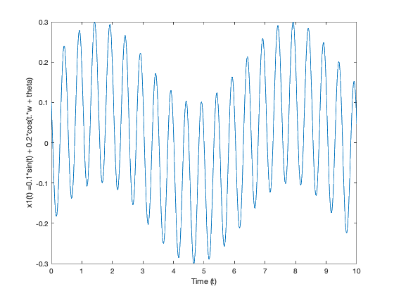
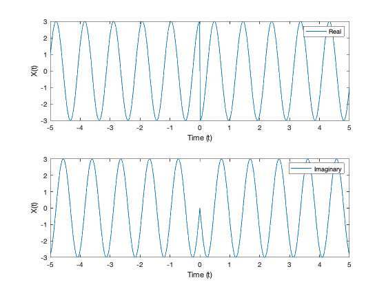

t = 0:0.01:10;
f = 2;
w = 2*pi*f;
theta = pi/3;
figure('Name', '1a', 'NumberTitle', 'off');
y = 0.1*sin(t) + 0.2*cos(t.*w + theta);
plot(t,y);
xlabel('Time (t)');
ylabel('x1(t) =0.1*sin(t) + 0.2*cos(t.*w + theta)');
figure('Name', '1b', 'NumberTitle', 'off');
wt = t.*w;
y = 0.1*sin(t) + 0.2*cos(wt);
plot(t,y,'x');
hold on;
y = 0.1*sin(t) + 0.2*cos(wt+(pi/4));
plot(t,y,'+');
hold on;
y = 0.1*sin(t) + 0.2*cos(wt+(pi/3));
plot(t,y,'*');
hold on;
y = 0.1*sin(t) + 0.2*cos(wt+(pi/2));
plot(t,y,'x');
hold on;
y = 0.1*sin(t) + 0.2*cos(wt+pi);
plot(t,y,'.');
hold on;
xlabel('Time (t)');
ylabel('x1(t) =0.1*sin(t) + 0.2*cos(t.*w + theta)');
legend( '0.1*sin(t) + 0.2*cos(wt)','0.1*sin(t) + 0.2*cos(wt+(pi/4))','0.1*sin(t) + 0.2*cos(wt+(pi/2))', '0.1*sin(t) + 0.2*cos(wt+pi)');
t = 0:0.01:10;
figure('Name', '2a', 'NumberTitle', 'off')
et = exp(t.*-0.1*pi);
plot(t,et,'r:');
hold on;
xt = et.*cos(t.*2*pi);
plot(t,xt);
hold on;
legend('et','xt')
xlabel('Time (t)');
ylabel('x(t)');
figure('Name', '2b', 'NumberTitle', 'off');
et = exp(t.*-0.1*pi);
plot(t,et,'r:');
hold on;
xt = et.*cos(t.*2*pi);
plot(t,xt);
hold on;
yt = et.*cos(t.*2*pi).*heaviside(t-2);
plot(t,yt);
hold on;
legend('et','xt','yt');
xlabel('Time (t)');
ylabel('x(t)');
t = 0:0.01:10;
r1 = complex(1,-3);
r2 = (10 * 7i) / complex(10,7);
z = r1 + r2;
f = 1/0.2;
w = 2*pi*f;
v = 50*sin(t.*w);
is = 50/z;
[phase_angle,magnitude] = cart2pol(real(is),imag(is));
figure('Name', '3', 'NumberTitle', 'off');
plot(t,v,'r-');
hold on;
plot(t,is);
xlim([0 0.4])
ylabel('V')
xlabel('Time (t)');
legend('Vs','Is')
t = -5:0.01:5;
x = cos(t.*(2*pi+0.25)) + 1i*sin(t.*(2*pi+0.25));
f = -3*sign(t).*x;
r = real(f);
i = imag(f);
figure('Name', '5a', 'NumberTitle', 'off');
subplot(2,1,1)
plot(t,r);
legend('Real');
xlabel('Time (t)');
ylabel('X(t)');
subplot(2,1,2)
plot(t,i);
legend('Imaginary');
xlabel('Time (t)');
ylabel('X(t)');
x_new = f.*rectangularPulse(t.*0.25);
r = real(x_new);
i = imag(x_new);
figure('Name', '5b', 'NumberTitle', 'off');
subplot(2,1,1)
plot(t,r);
legend('Real');
xlabel('Time (t)');
ylabel('X(t)');
subplot(2,1,2)
plot(t,i);
legend('Imaginary');
xlabel('Time (t)');
ylabel('X(t)');
figure('Name', '6', 'NumberTitle', 'off');
syms x(t)
x(t) = piecewise(-2<=t<0, 0.25*t, 0<=t<0.5, 1.5, 0.5<=t<2, -t+2);
fplot(x(t));
hold on
grid on
x2 = 2*x(t+1);
hold on
fplot(x2);
grid on
Warning: Imaginary parts of complex X and/or Y arguments ignored


